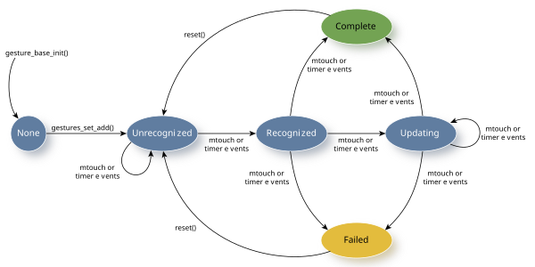
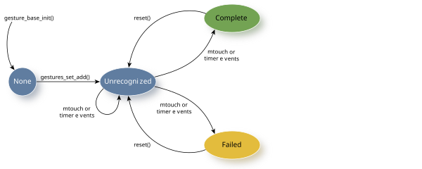
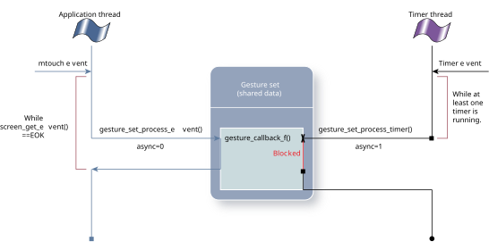
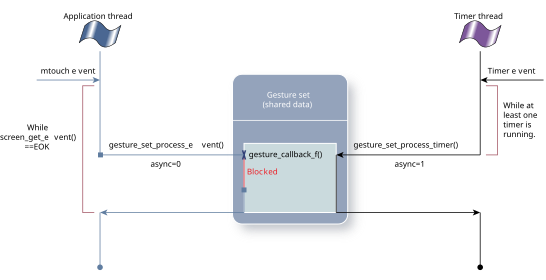

Gesture recognition is performed by gesture recognizers that detect gestures through touch events.
Applications are responsible for selecting the gestures they're interested in and adding the corresponding gesture recognizers to one or more gesture sets to achieve the desired recognition behavior. When a gesture-recognizer state transition occurs, the gesture set invokes the application callback function for that gesture. Applications can also add their own gesture recognizers if they need specialized or custom gesture recognition.
It's important to understand the states and valid state transitions of the gesture recognizers. Understanding is especially important when you're defining your own custom gesture recognizer because you need to provide the function to handle these state transitions:
gesture_state_e (*process_event)(struct contact_id_map* map,
struct gesture_base* gesture,
mtouch_event_t* event,
int* consumed)
Note that composite gestures and discrete gestures go through different state transitions.


State transitions are specific to the gesture that the recognizer is detecting. Most state transitions are a result of mtouch or timer events that are of interest to the gesture recognizer.
Unless there is a failure dependency indicated, each gesture recognizer in a gesture set receives all mtouch events sent to the gestures set; this means your application can simultaneously recognize several gestures.
A single mtouch event can result in the invocation of multiple gesture-recognizer callback functions because several gestures can be recognized simultaneously.
The gesture-recognizer callback function is provided by your application. It defines what the application does when a gesture is recognized or updated:
void(*gesture_callback_f)(struct gesture_base* gesture,
mtouch_event_t* event,
void* param, int async);
The parameter gesture contains information about the gesture, event contains information about the mtouch event that caused the gesture, and async identifies whether this callback was invoked from an mtouch event (async = 0) or from a timer event (async = 1).
This callback function is invoked as a result of either an mtouch or a timer event. Although your gesture callback will be invoked on other state transitions, your application is usually interested only when the gesture has been recognized or not. That is, you would usually implement application behavior based on your gesture recognizer in the GESTURE_STATE_COMPLETE or the GESTURE_STATE_FAILED state.
The goal of this callback function is to identify the gesture that is recognized based on mtouch events that are received and to define your application's actions based on the gesture that is recognized. Typically, your application copies information from the incoming mtouch event to a local structure and uses that information accordingly.
Events
A gesture recognizer can change states on timer events. Gesture callback functions are invoked after the invocation of the timer callback from the context of the timer thread. The timer thread doesn't detect mtouch events.
Gesture callbacks of gesture recognizers that have timers (e.g., double tap, triple tap, or long press), can be invoked from both the application thread or the timer thread. The processing performed while in your gesture callback will block either mtouch or timer events, depending on which thread invoked the callback.
The following diagrams show that the gesture set is shared between two separate threads. Each of these threads (application and timer) can be blocked by the other thread when accessing the shared data.


The Gestures library is thread-safe and assures that any data shared between multiple threads will not be accessed simultaneously. However, you need to consider the possibility of threads blocking, or being blocked. For example, if your gesture callback function performs rendering operations, you are likely blocking important mtouch or timer events from being processed. As a result, the behavior of your application may become unpredictable.
To help with the synchronization between mtouch-invoked and timer-invoked gesture callback functions, gesture recognizers and gesture sets provide a parameter, async, in the gesture_callback_f() and gestures_set_fail_f() functions. This async parameter is set to 1 when the gesture callback is called from the timer thread.
Gesture recognizers that don't use timers aren't guaranteed to never have their gesture callback function invoked asynchronously. Your callback functions are synchronous to the thread where gestures_set_process_event() is called only when none of the gestures in your gesture set use timers. If you are using gesture recognizers that are provided by the Gestures Library, note that the double tap, triple tap and long press gesture recognizers use timers.
Lists
Timers behave differently, depending on what the application passes:
It doesn't make sense to use the wall clock for timer events when a gesture recognizer set is passed a list of events that occurred in the past. Gesture recognizers will receive events at a much higher rate than when the events come in at real time. For this reason, when processing event lists, the gesture set will cause timers to expire and invoke their callback functions using the event timestamps as the timebase.
If unexpired timers are left after the event-list processing finishes, they will be converted to realtime timers based on the differences between the current wall clock time and the timestamp of the last event in the list.
Timer handling for gestures recognizers with failure dependencies behave in the same way.
You can define a gesture recognizer to have failure dependencies on other gestures.
A failure dependency is when the detection of one gesture recognizer is dependent on the failure of another. That is, if one gesture recognizer moves to GESTURE_STATE_FAILED and it has failure dependents, then the gesture recognizers that are dependent on this failed gesture recognizer will be processed.
...
gesture_tap_t* tap;
gesture_double_tap_t double_tap;
...
gesture_add_mustfail(&tap->base, &double_tap->base);
The above code snippet indicates that when a double-tap gesture fails,
the gesture recognizer will try to recognize the mtouch event as a
tap gesture.
void(*gestures_set_fail_f)(struct gestures_set* set, struct event_list* list, int async);
This failure callback function is invoked only if all gesture recognizers in the gesture set have transitioned to GESTURE_STATE_FAILED. If at least one gesture recognizer is in the GESTURE_STATE_COMPLETE state, the failure notification callback function isn't invoked.
The event_list parameter contains the list of events that were delivered to the gesture set that subsequently caused all gestures to fail. This list of events is passed to the failure callback function of the gesture set. These events can either be processed individually or delivered to another gesture set for further processing.
Event lists are used to keep copies of events should failure dependencies need to be fulfilled or failure notifications need to be delivered. Event lists can contain up to 1024 events. If more events come in after the list is full, the oldest non-key (mtouch or release) events are dropped from the list.
Once a gesture recognizer in a gesture set transitions its state to either GESTURE_STATE_COMPLETE or GESTURE_STATE_FAILED, it will be reset only when all other gesture recognizers in the same gesture set have also transitioned to either of these states.
void (*reset)(struct gesture_base* gesture);
on each of its gesture recognizers.